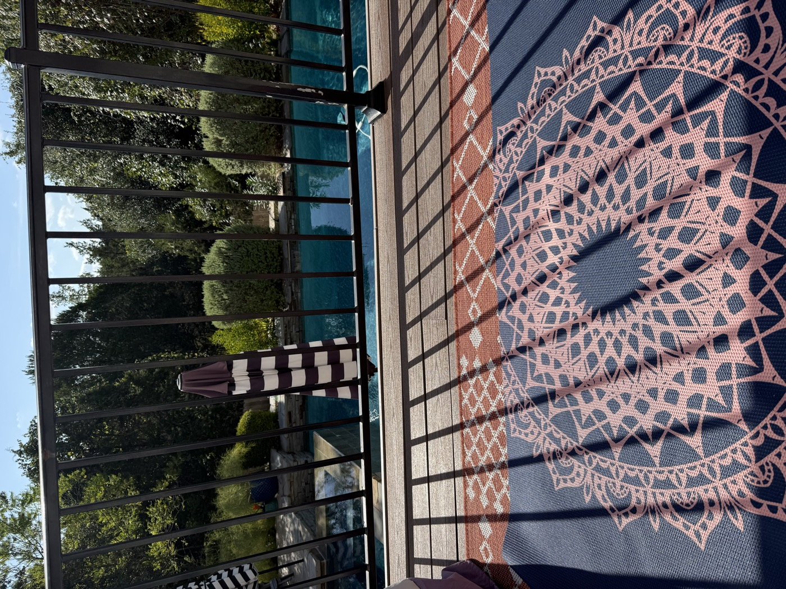

I need to start with a confession: I have known meditation is good for me for a very long time. I've read the articles. I've downloaded the apps. I've had the best of intentions on more Sunday nights than I can count.
I am, in fact, notorious for this on Insight Timer. The app used to ask me if I'd commit to a seven-day streak. I always tapped yes. Then it learned, and started asking for five. Yes again, optimistically. It now asks me for a mere two days. Two. My meditation app has lowered its expectations of me more gracefully than I ever have.
Because then Monday arrives, with its lunches and carpools and emails and the seventeen small fires that make up a normal day, and the cushion I was going to sit on stays exactly where it is.
And here's the thing. It's not for lack of a place to sit.

This is my meditation spot. A mat on the deck, morning sun, the pool below, nothing but trees beyond it. It does not get more inviting than this. So why is it so hard to spend five minutes there?
That question, it turns out, is the whole point of this book.
Impatiently Zen – No Cushion Required is written by my friend Lara Schreiner, and its subtitle says it all: For Women Who Want to Meditate and Don't Have the Time. Full disclosure, Lara asked me to read an early draft, and I went in expecting to do a favor for a friend. I came out with a mantra, a new practice, and a list of people I wanted to hand it to.
She knows exactly who she's talking to
What struck me first is that Lara knows precisely who she's writing for, and she reaches her. This is a book for the frazzled, over-giving, depleted woman who has put herself last for so long it's become a reflex. The mother who has wanted to meditate for years but has never found a way to fit it into her actual life, not the life she imagines she'll have once things calm down.
Lara doesn't shame that woman. She doesn't tell her to wake up at 5 a.m. or carve out a sacred hour. She acknowledges that the hurdle is real, that a beautiful mat on a beautiful deck is not, by itself, enough to get a busy person to sit down on it, and then she quietly hands her something she can use before the coffee is done brewing. The goal isn't to add one more should to the list. It's to fold the practice into the day you're already living, so seamlessly it stops feeling like a task at all.
Those are the "pocket practices," and they are the heart of the book. They're short, portable, and genuinely easy to weave into a hectic day. Lara compares them to healthy snacks instead of a full sit-down meal: for some of us, small and manageable is what actually gets eaten, and that's okay. I found that oddly freeing. I have spent years failing at the full meal. It had never occurred to me that the snack still counts.
The science is real, and she makes it digestible
I'm a "but why?" person, and this is where the book won me over as a reader, not just as a friend. Lara backs everything with real research, then pairs it with a personal story or an analogy that makes it land. She explains what meditation does at the cellular level in a way I could actually follow. She cites Dr. Andrew Weil calling breathwork a natural tranquilizer, and my honest reaction was "yes, please." There's a passage on grounding and its effect on inflammation markers that had me ready to walk barefoot in the yard that afternoon.
That balance of evidence and application runs through every chapter, and it's the thing that keeps a tired reader turning pages. She doesn't just tell you meditation is good for you. She tells you what you'll get, and then she shows you the smallest possible way to get it.
The humming section of the book
Chapter 3 is about sound, and I wasn't prepared for it.
When I was in labor with my second child, I tried for an epidural and it came too late. Somewhere in the pain, without deciding to, I started humming. It felt strange, but it worked, so I kept going. That same baby hummed himself to sleep in his crib. Everyone thought it was a little odd. He's now the kid who can pick up any melody and sing every lyric, and he's probably my most zen child. Not passive, he's a doer, but he is very rarely stressed.
I had never connected any of that until I read Lara's chapter. I still don't know if there's a link. But the fact that a book on meditation could make me see my own life differently is exactly its power.
That chapter also finally got me to build a mantra, something I've known mattered for years and never made stick. What tipped me was her section on the Beatles and their time in India: the idea that stepping back and doing "nothing" can produce enormous creativity and productivity is so counterintuitive, and so true. I'm working on a mantra now, and I'm building one with my youngest to help with some anxiety and negative thinking. That mind shift, for both of us, feels like the whole key.
Learning to loosen the grip
The later chapters, on letting go, on loosening your grip, on not fighting your own trajectory because you think you should be doing something else, landed hard for me. There's a fire-writing practice I couldn't wait to try, and a chocolate exercise I'm saving for a night when everyone is finally asleep. The book is generous with tools, almost overwhelmingly so, in the best way. It's the kind of book you read straight through once, absorbing, and then keep on the nightstand to come back to and actually do.
Who this is for
If you're a single executive with a quiet apartment and a standing 6 a.m. yoga slot, this may not be your book, and that's fine. Lara made a choice about who she was writing for, and she stayed loyal to her.
But if you're the woman with a million things on her plate who has always suspected meditation could help and has never once managed to make it happen, this is the book I wish someone had handed me years ago. It doesn't ask you to become a different person. It meets you exactly where you are, in the car line, at the stove, in the three minutes before the next thing, and shows you that you can start right there.
No cushion required.
Where to find it
Impatiently Zen – No Cushion Required: For Women Who Want to Meditate and Don't Have the Time
by Lara Schreiner
Available on Amazon
And yes, Lara is my friend. I'd be telling you about this book either way.